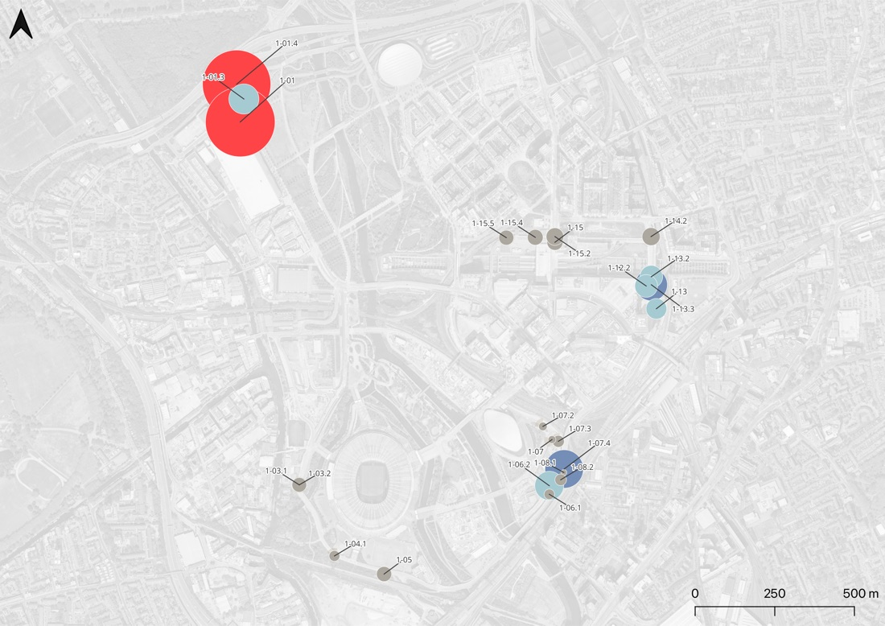

Fyma × SPIN Unit — Mobility KPIs for Queen Elizabeth Olympic Park
Planning authorities usually build mobility KPIs from expensive, one-off surveys. Fyma’s computer-vision platform, reading existing CCTV feeds without storing video, offered something different: continuous, GDPR-compliant traffic data — if someone could turn it into planning-relevant metrics.
A research collaboration between SPIN Unit and Fyma, delivered for the London Legacy Development Corporation, the planning authority for Queen Elizabeth Olympic Park, running through two phases in summer and winter 2021.
Designed a suite of mobility indexes computable directly from Fyma’s ~30-camera network — traffic density, modal share, modal consistency, amenity diversity and popularity — applied across five clusters around the park (Trampery, Stratford International, Westfield Stratford City, the Aquatics Centre, the Stadium).
Delivered a summer analysis and report (August 2021) followed by a winter update (December 2021), alongside a set of concrete suggestions for improving Fyma’s own sensing platform for urban-planning use cases.
{kind=link}

Open full size ↗